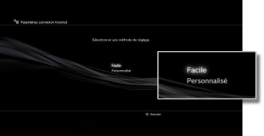
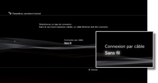
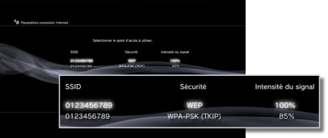
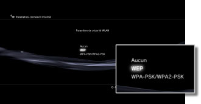
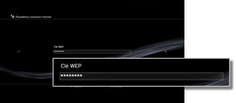

Paramètres > Paramètres réseau > Paramètres connexion Internet (connexion sans fil)
Paramètres connexion Internet (connexion sans fil)
Ce paramètre est uniquement disponible sur les systèmes PS3™ équipés de la fonctionnalité LAN sans fil.
Pour définir la méthode de connexion à Internet. Les paramètres de connexion Internet varient en fonction de l'environnement réseau et des périphériques utilisés. La procédure suivante décrit une configuration typique lors d'une connexion sans fil à Internet.
1. |
Vérifiez si les paramètres du point d'accès ont été renseignés. |
|---|---|
2. |
Vérifiez qu'aucun câble Ethernet n'est connecté au système PS3™. |
3. |
Sélectionnez |
4. |
Sélectionnez [Paramètres connexion Internet]. |
5. |
Sélectionnez [Facile].  |
6. |
Sélectionnez [Sans fil].  |
7. |
Sélectionnez [Scan]. |
8. |
Sélectionnez le point d'accès à utiliser.  |
9. |
Vérifiez le SSID du point d'accès. |
10. |
Sélectionnez les paramètres de sécurité à utiliser.  |
11. |
Saisissez la clé de chiffrement. La clé de chiffrement est affichée sous la forme [*]. Si vous ne connaissez pas la clé de chiffrement, contactez la personne responsable de la configuration ou de la maintenance du point d'accès pour obtenir de l'aide.  Lorsque vous avez terminé de saisir la clé de chiffrement et une fois la configuration réseau confirmée, la liste des paramètres s'affiche. |
12. |
Enregistrez vos paramètres. |
13. |
Testez la connexion. |
14. |
Confirmez les résultats du test de connexion. |
 (Paramètres) >
(Paramètres) >  (Paramètres réseau).
(Paramètres réseau).Conseils
- Si la connexion échoue, suivez les instructions affichées pour vérifier vos paramètres. Reportez-vous également aux informations de votre fournisseur de services Internet et aux instructions fournies avec le périphérique réseau utilisé.
- Si vous testez la connexion immédiatement après la sélection de [Automatique] > [AOSS™] à l'étape 7, il se peut que la configuration du routeur ne soit pas terminée et que la connexion échoue. Attendez environ 1 ou 2 minutes avant de tester la connexion.